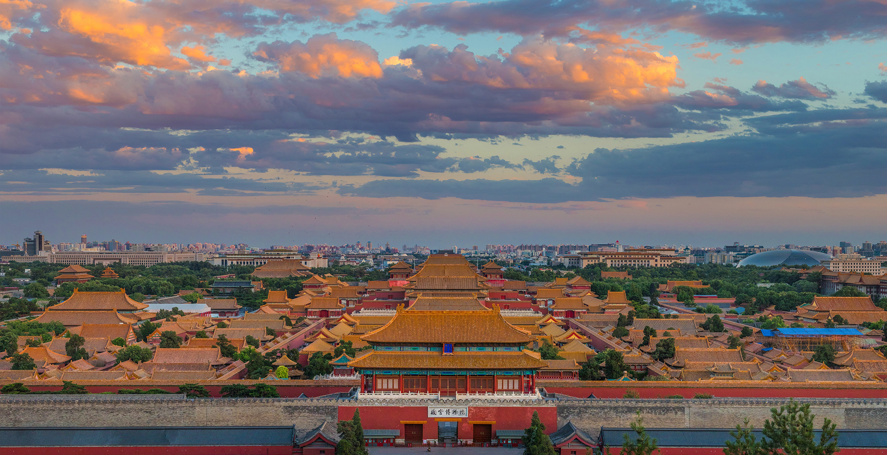

Beijing's Introduction
Beijing （北京）is the capital of the People's Republic of China. It is the world's most populous capital city, with over 21 million residents within an administrative area of 16,410.5 km^2.The city, located in Northern China, is governed as a municipality under the direct administration of the State Council with 16 urban, suburban, and rural districts.Combining both modern and traditional architecture, Beijing is one of the oldest cities in the world, with a rich history dating back three millennia. As the last of the Four Great Ancient Capitals of China, Beijing has been the political center of the country for most of the past eight centuries, and was the largest city in the world by population for much of the second millennium AD

Location
The city, located in Northern China, is governed as a municipality under the direct administration of the State Council with 16 urban, suburban, and rural districts. Beijing is mostly surrounded by Hebei Province with the exception of neighboring Tianjin to the southeast; together, the three divisions form the Jingjinji megalopolis and the national capital region of China.
Transportation
The Beijing Subway, which began operating in 1969, now has 23 lines, 404 stations, and 699.3 km of lines. It is the longest subway system in the world and first in annual ridership with 3.66 billion rides delivered in 2016. The subway is undergoing rapid expansion and is expected to reach 30 lines, 450 stations, 1,050 kilometres in length by 2022. When fully implemented, 95% of residents inside the Fourth Ring Road will be able to walk to a station in 15 minutes. The Beijing Suburban Railway provides commuter rail service to outlying suburbs of the municipality. There are nearly 1,000 public bus and trolleybus lines in the city, including four bus rapid transit lines. Standard bus fares are as low as ¥1.00 when purchased with the Yikatong metrocard.